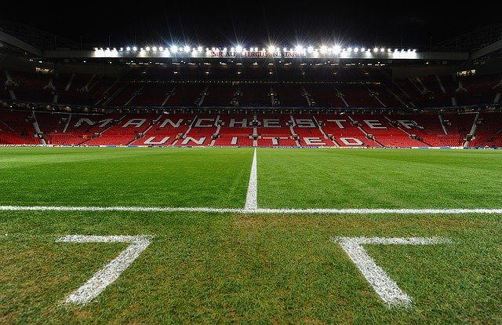

Old Trafford – stadion Manchesteru United, zwyczajowo nazwany Teatrem Marzeń. Dzielnica Manchesteru, w której położony jest stadion i od której wzięła się jego nazwa, znajduje się na zachód od centrum miasta.
Stadion powstał w 1910 roku za gigantyczną wówczas sumę 120 tysięcy funtów. Ze względu na bliskie sąsiedztwo Kanału Manchesterskiego stadion został zbombardowany podczas II wojny światowej. Jedyną zachowaną oryginalną częścią przedwojennego Old Trafford są mury tunelu między ławkami rezerwowych, którym niegdyś piłkarze wychodzili na mecz.
Boisko ma 106 metrów długości i 65 metrów szerokości, trawa zaś, o nazwie Kentucky Blue, została sprowadzona ze Stanów Zjednoczonych. Ostatni remont został ukończony latem 2006 roku. Rozbudowano trybuny znajdujące się w narożnikach boiska, tak by sięgały one na wysokość trzeciego piętra miejsc przeznaczonych dla widowni. Po przebudowie limit 68 tysięcy miejsc został zwiększony do 76300 widzów.
Na stadionie znajduje się oficjalny sklep z pamiątkami Manchesteru United – Megastore, klubowe muzeum oraz Red Café – restauracja kibiców "Czerwonych Diabłów". Na stadionie oprócz punktów gastronomicznych znajdują się liczne lokale firm bukmacherskich.
Na inaugurację przyszło 45 000 osób, wówczas Manchester przegrał z Liverpoolem 4:3. W 2003 roku na Old Trafford został rozegrany mecz finału Ligi Mistrzów.
15 maja 2016 roku o godzinie 16:00 polskiego czasu na stadionie miał zostać rozegrany mecz ostatniej kolejki sezonu 2015/2016 przeciwko Bournemouth. Jednak na 15 minut przed rozpoczęciem spotkania ewakuowano kibiców przebywających na obiekcie w związku z podejrzaną paczką, która została znaleziona na stadionie. Na miejsce wezwano policję oraz oddział saperów. Po około dwóch godzinach od ewakuacji, policja poinformowała, że przeprowadzono kontrolowaną detonację ładunku. Jak się później okazało, owa paczka była atrapą bardzo podobną do ładunku wybuchowego, pozostawioną po próbach antyterrorystycznych. Mecz został przeniesiony na inny termin.
2 maja 2021 roku przed stadionem odbył się protest kibiców Manchesteru United przeciwko rodzinie Glazerów, właścicieli klubu. Protest zgromadził ponad 1000 osób przed stadionem, a także około 200 osób przed hotelem The Lowry. W hotelu tym przebywali zawodnicy Manchesteru United czekający na mecz z Liverpoolem, który miał odbyć się tego samego dnia o godzinie 17:30. Godzinę przed ropoczęciem meczu na stadion, pomimo zakmnięcia go dla kibiców z powodu pandemii COVID-19, wdarło się około 100 osób. Podczas wtargnięcia kibice wykrzykiwali hasła nawołujące do odejścia z klubu rodziny Glazerów, niszcząc przy tym sprzęt telewizyjny i zabierając ze stadionu narożną chorągiewkę. Z tego powodu mecz został przełożony na inny termin[2][3].
OLD TRAFORD